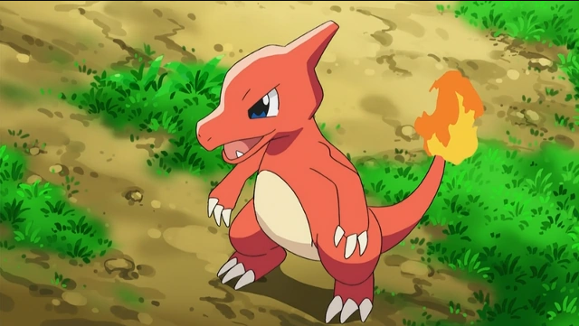
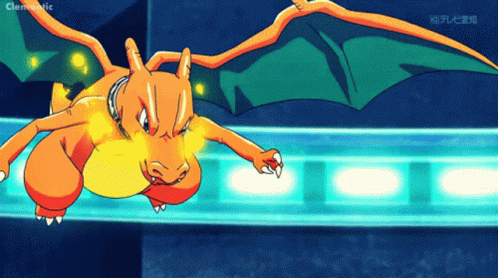

Charmander
Um pequeno dinossauro bípede com uma chama na ponta de sua cauda que é um indicador de sua saúde e emoções.

Charmeleon
Quando Charmander atinge o nível 16, ele evolui para Charmeleon. Charmeleon é maior e mais agressivo, com uma chama ainda mais intensa na cauda. Ele é conhecido por seu temperamento feroz e habilidades de combate aprimoradas.

Charizard
A evolução final ocorre no nível 36, quando Charmeleon se transforma em Charizard. Charizard é um grande dragão alado que pode cuspir fogo e voar. Ele é incrivelmente poderoso e respeitado por sua força e habilidades de voo.